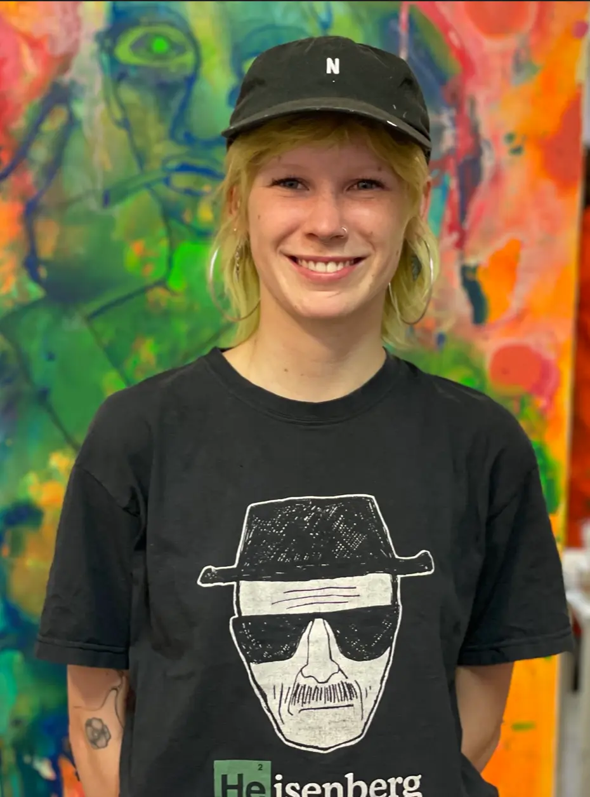

Anna Kirkebys Kunstunivers
Anna Kirkeby er en pige på 21 år, som bor sammen med roomies i
København.
Anna har altid været fascineret af kunsten og malet lige siden, at hun var helt lille. I folkeskolen
brugte hun mange timer på at tegne, når undervisningen blev lidt for kedelig og elskede billedkunst. Hun
fortsatte med at lave kunst og male efter folkeskolen og lærte forskellige medier at kende gennem
produktionsskole og hendes 10. klasse, der var kunstrelateret.
I dag går hun går på Daghøjskolen VERA, en skole for kunst og design, der skaber et intenst, lærerigt
og kreativt forløb. Her er der plads til at arbejde med kreative og kunstneriske fag i mange timer
hver dag, alle ugens hverdage. Lige i Annas ånd.
Kunsten giver Anna en form for ro, hvor hun skaber et rum, hvor det kun er hende og hendes
malerier. Herigennem kommer hun ud med energi, hvor hun gennem farver, figurer og stemninger kan
udtrykke sig. Kunsten kommer rent intuitivt og følelsesmæssigt til Anna, hvor hun føler sig roligt i
kontakt med sit indre.
Der går ikke mange sekunder i selskab med Anna, før man lader sig drage med
af hendes helt særlige gejst og passion for kunsten. Se bare hendes kreative kunstunivers
nedenfor.